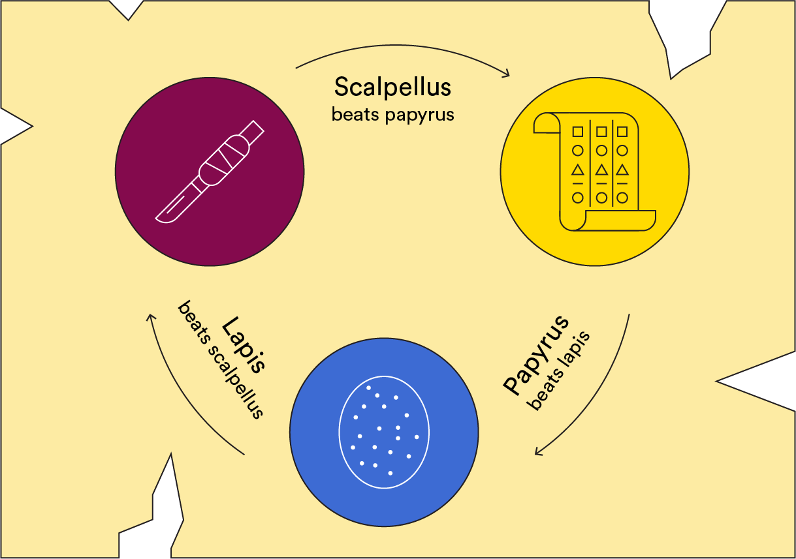

Instructions
Lapis papyrus scalpellus (also known as scalpellus lapis papyrus, papyrus lapis scalpellus and scalpellus papyrus lapis) is a hand game usually played between two people, in which each player simultaneously forms one of three shapes with an outstretched hand. These shapes are "lapis" (a closed fist), "papyrus" (a flat hand), and "scalpellus" (a fist with the index finger and middle finger extended, forming a V). "Scalpellus" is identical to the two-fingered V sign (also indicating "victory" or "peace") except that it is pointed horizontally instead of being held upright in the air. A simultaneous, zero-sum game, it has only two possible outcomes: a draw, or a win for one player and a loss for the other. 
Game
Select your move